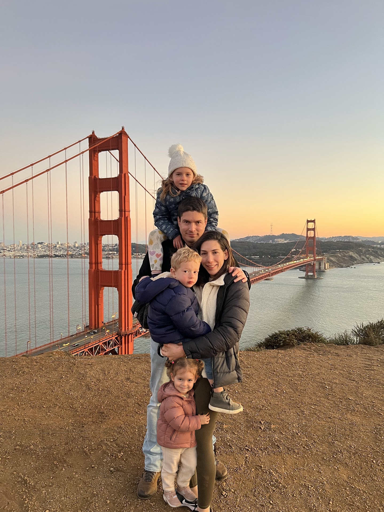

About
I am an Assistant Professor at the Technion in the Faculty of Data and Decision Sciences. Previously, I was a Postdoctoral Research Scientist at NVIDIA, a postdoctoral researcher at UC Berkeley with Alyosha Efros, and a Visiting Scholar at Google DeepMind. I received my PhD from the Weizmann Institute of Science, advised by Michal Irani, and hold bachelor’s degrees in Physics and Electrical Engineering from Ben-Gurion University.
Selected honors and grants
- Alon Fellowship (Exact Sciences and Engineering), 2026
- Israel Science Foundation (ISF) — Personal Research Grant, 2026
- Chaya Career Advancement Chair
- Rothschild Postdoctoral Fellowship
- Fulbright Postdoctoral Fellowship
- John F. Kennedy Award for Outstanding PhD, Weizmann Institute
- Blavatnik Award for CS PhD Graduates
Personal
I’m happily married to Shira, an amazing physician, and a father to Noam, Itamar, and Noga. We live in Rehovot and love travelling and eating.

Contact
assafshocher@gmail.com
Faculty of Data and Decision Sciences, Technion
Bio for talks
Assaf Shocher is an Assistant Professor in the Faculty of Data and Decision Sciences at the Technion. His research focuses on deep learning and computer vision. Previously, he was a Postdoctoral Research Scientist at NVIDIA, a postdoctoral researcher at UC Berkeley with Alexei A. Efros, and a Visiting Scholar at Google DeepMind. He received his PhD from the Weizmann Institute of Science, advised by Michal Irani, and holds bachelor’s degrees in Physics and Electrical Engineering from Ben-Gurion University.